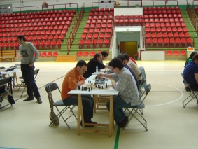
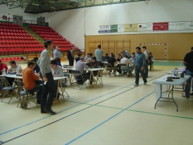
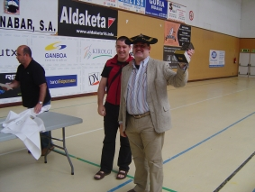

Agustin de Leitza Xake Elkartea |
| » hasiera » elkarteko bazkideak » taldekako txapelketa » azken txapelketak » loturak |
Zarautzko pintxetak09-06-07Aurten berriro gonbidatu gaituzte Zarautzko taldea bazkaltzera, barkatu pintxeta txapelketa bat jolastera. Torneoa oso ondo eginda egon da, 11 taldeekin (nahiz eta azken orduko bajak izan), baina maila altua izan da, batez ere Batallakoek, ia denak, etorri zirelako, bakarrik Cruz-López faltatzen zen. Bigarren maila batean Zarautz A, Fomento, Abadiño (titularrekin) eta gu geunden. Gure asmoa ez zen irabaztea baina baina sorpresaren bat ematea, pintxetak ez dira gure egun-guztiko gauza.  Txapelketa Batallak irabazi zuen, baina kostata. Azken txanda hasi baino lehen Zarautz zegoen lehen postuan, baina bakarrik lortu zuten berdinketa gure taldearen aurka, eta Batallakoek irabazi zuten, ondorioz, Batallak irabazi zuen txapelketa. Hirugarren postuan Fomento sailkatu zen, eta gu laugarren, puntu erdira bakarrik.  Txapelketatik azpimarratzeko gauzak, bazkariaz aparte noski, ez dugu inbidia eman nahi, batzuk:

Pibe bere txapela eta sariarekin. |